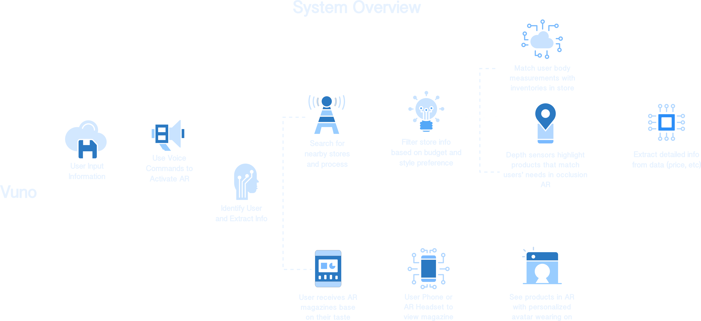

How can we optimize the shopping experience and make it efficient and effective? There are moments when you walk in a store and you are overwhelmed by the amount of products and information. You enter with no idea whether they have clothes you want, and you don't know where or how to start. Sometimes you spend hours in a store, trying on a lot of pieces and you can't find one that fits you perfectly.
Vuno is your solution to problems like these. Vuno recreates your shopping experience using Augmented Reality with assistance from AI.
Vuno is an artificial intelligence powered assistance that utilizes Augmented Reality to assist individuals in their shopping experience to make both store navigation and garment selection processes effortlessly and effectively. Vuno implements conversational UI to help users set their shopping goals. Vuno extracts users' physical information such as body measurements in BWH, height, weight, shopping budget and find target stores and clothes that satisfy users' pre-set shopping goals. Vuno utilizes AR to forge an engaging shopping experience for shoppers to filter and absorb information with ease and efficiency.

01.
Through Vuno, user can use Voice Commands to trigger the AR interface and activate their AR shopping experience. Vuno receives commands and extracts users' registered information using Artificial Intelligence to search for surrounding areas and find the stores that suit users' needs.
02.
Based on users' body measurements, shopping habits, and spending budget, Vuno lists out some of the most relevant information for users such as price range, available discounts, clothes sizes, new collection arrive date, and store's opening hours. Vuno provides color based recommendation systems.


03.
Voice Control Interface. Vuno provides a shopping category list interface after user enters the store. User can use voice commands to set his or her target goal, for example the category he or she wants to shop in. After Vuno receives the command, it will process the data and start loading information for the user.
04.
AI Powered Information Processing. Vuno matches users needs with current inventory in store based on users’ shopping goals. Vuno identifies inventories that match with users' body measurements through guidance from animated butterflies. Vuno accelerates users' information processing progress by further provides information such as size, price, and new collection to the end-users at a glance.

05.
Shop with AR Whenever and Wherever. For the users who don't have time and enjoy the ease of shopping at home or the disabled individuals who might encounter difficulties coming in store, Vuno provides the convenience by bringing AR shopping experience whenever and wherever. User can choose to flip through stores fashion magazines and see recommended clothes for them in Augmented Reality models. By simply opening up Vuno, user will see live clothing models with their reactive personal avatar.
"How can we enhance the current shopping experience?" I start from understanding the problem on the current shopping experience. Then I dive into User Research where I could understand what users need and their pain points. After User Research, I conduct User Interview with potential users in different demographic groups to further. I decided to conduct Contextual Inquiry research method followed by Semi-Structured Interview to take close observations on users' behavior during their shopping process.

After receiving consent from the stores and customers, I started observing users' behaviors and recording when new events are triggered. I made note on the time they spent on each task, such as "picking clothes on the same hanger", "walking around", "getting help from salespeople", and "trying on in fitting room".
while no research subjects are completely alike, one common result I found was that most customers spent around 60-85% of their time picking and choosing the clothes they want or trying on in the fitting room. Some of the users left the store when the pieces they brought in the fitting room didn't suite well.

Since we are redesigning the whole interaction of users with their shopping experience, we have broken down the project into six parts: Find a shopping district, Find a store, Glance through the store, Find products, Try on products (repeat previous step if needed) and Check out.
By examing closely at the Shopping Process, I was able to find the clustered break downs in these following procedures:

In order to validate my hypothesis, I took out my notebook and started recording customer behaviors during my site visit. After 2.5 hours of observation and 1 hour of interview in total, I noted down the following insights:

The four main insights I found include users spend the most time looking for clothes. This searching process took most of users shopping time, which might leave them in frustration. They often don't know what's available in store, and they are often underserved by the sales representatives due to sales' limited number of people available in store. Most users leave the store in five minutes without looking in the store further.
From users' side, in order to emphasize with our users and spot opportunity gaps, I made the following personas who encounter different shopping hassles when they try to meet their shopping goals.

In order to transform ideas from my mind into reality, pen and paper are my best compananions. I pulled out sticky notes and wrote down problems and opportunity identified, and then started sketching. There were many ideas that came out in my head, eventually I filtered down to these core features.
The System Overview demonstrates two disparate shopping experience that users will experiment with Vuno. The System Overview records the use of Vuno from input information, voice commands to depth sesors matching.
When users walk in the occlusion covered AR shop, depth sensors that match with users' idetification will be highlighted in users' AR view to create the immersive experience. Walls inside the space will be represented with occusion planes.

Although shopping offline in an immersive AR environment is still in the ideation and early-development stage, I am hoping Vuno could become a disruptive application or an inspiration which solves hassles from traditional time-consuming shopping process in the near future.
I designed this idea from existing technologies. Nevertheless, how to integrate all the technologies together for is my next step research plan. I have currently designed the Vuno Augmented Reality app using Unity and Vuforia, but I would love to research all the possible implementations that could highlight help Vuno recognizes available clothes from inventory. One idea I have is to closely pair up clothes with its hanger and embed product information in the hanger, or simply input clothing information in hardware tags to assist information processing.


{kind=link}
{kind=link}
{kind=link}
{kind=link}